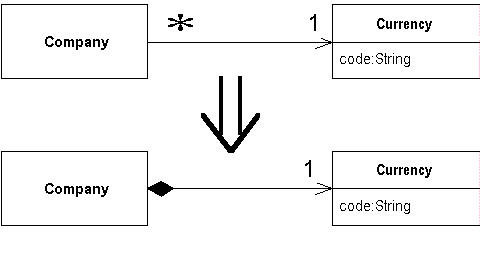

Change Reference to Value
You have a reference object that is small, immutable, and awkward to manage.
Turn it into a value object.

For more information see page
183
of
Refactoring
| Refactoring Home |
| Alphabetical List |